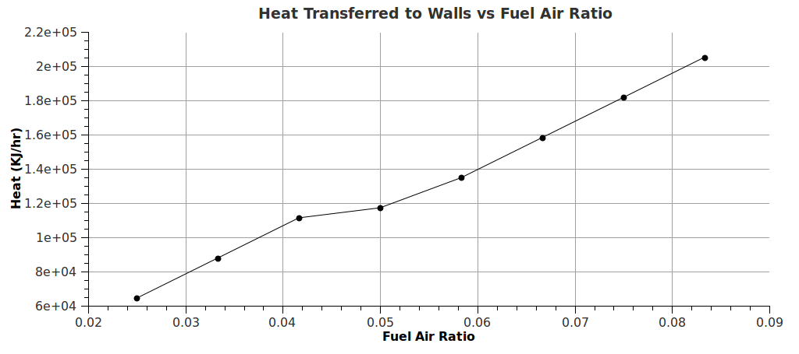
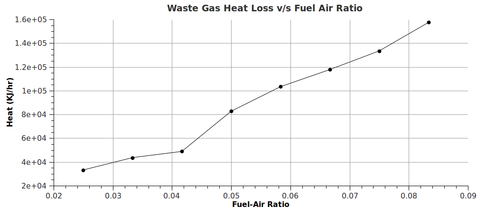
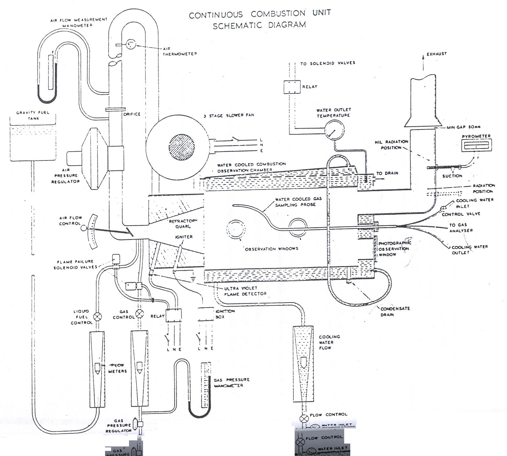

Aviation Turbine fuel is a mixture of a large number of different hydrocarbons. It is a specialized type of petroleum-based fuel used to power aircraft. It is generally of a higher quality than fuels used in less critical applications such as heating or road transport, and often contains additives to reduce the risk of icing or explosion due to high temperatures, amongst other properties. The range of their sizes (molecular weights or carbon numbers) is restricted by the requirements for the product, for example, the freezing point or smoke point. Kerosene-type jet fuel (including Jet A and Jet A-1) has a carbon number distribution between about 8 and 16 carbon numbers; wide-cut or naphtha-type jet fuel (including Jet B), between about 5 and 15 carbon numbers. The first jet fuels were based on kerosene or a gasoline-kerosene mix, and most jet fuels are still kerosene-based.
To To determine the effect of air-fuel ratio on combustion, heat transfer to water-cooled walls and waste heat losses, when ATF K-50 is used as fuel

Aviation Turbine fuel is a mixture of a large number of different hydrocarbons. It is a specialized type of petroleum-based fuel used to power aircraft. It is generally of a higher quality than fuels used in less critical applications such as heating or road transport, and often contains additives to reduce the risk of icing or explosion due to high temperatures, amongst other properties. The range of their sizes (molecular weights or carbon numbers) is restricted by the requirements for the product, for example, the freezing point or smoke point. Kerosene-type jet fuel (including Jet A and Jet A-1) has a carbon number distribution between about 8 and 16 carbon numbers; wide-cut or naphtha-type jet fuel (including Jet B), between about 5 and 15 carbon numbers. The first jet fuels were based on kerosene or a gasoline-kerosene mix, and most jet fuels are still kerosene-based.


- After preliminary observations, set cooling water flow rate to an adequate value.
- Switch on the panel & purge chamber for 2-3 minutes.
- Reduce air flow rate to <100 kg/hr or LPG will blow off without ignition.
- Press ignition switch continuously as LPG flow is started, until a flame is established.
- Once LPG flame is established, introduce
- ATF KS 50 into the compression chamber.
- Can increase the air flow rate to >100 kg/hr & keep it constant at this value.
- Gradually decrease LPG flow rate to zero -combustion continues purely on ATF.
- Adjust fuel flow rate at the required value.
- Note the readings: air inlet temperature, water inlet & outlet temperatures, water flow rate, air flow rate, exhaust gas temperature. Also, observe the nature of the flame.
- Repeat above steps for different air-fuel ratios.
- Lean cut off point: Continuously increase the air-fuel ratio until the flame is blown off.
- Turn off the fuel supply.
- After the fuel in the supply line is used up, turn off the fuel valve.
- Again purge the chamber with air for 2 minutes.
- Switch off the burner & instrumentation panel.
- Turn off the cooling water after it is allowed to run for 5 more minutes.
Measurements
- Note the formulae for finding the airflow rate and fuel flow rates.
- Operate the unit on gaseous fuel according to operations manual. Change over to fuel after light up. Note your observation on flames with gaseous and liquid fuels.
- Carryout the experiment on the effect of air/fuel ratio on combustion, heat transfer and flue gas losses. Note the flame conditions.
- Plot the curves: a) Heat transfer to water-cooled walls vs. air/fuel ratio, b) waste gas heat loss vs. Air fuel ratio (for lean region).
- Carry out heat balance analyses by using theoretical flue gas analyses at air/fuel of maximum A/F ratio attained with steady operating conditions.

Experimental Data
|
 | ||||||||||||||||||||||||||||||||||||||||||||||||||||||||||||||||||||||||||||||||||||||||||||||||||||||||||||||||||||||||||||||||||||||||||||||||||||||||||||||||||
|  | |||||||||||||||||||||||||||||||||||||||||||||||||||||||||||||||||||||||||||||||||||||||||||||||||||||||||||||||||||||||||||||||||||||||||||||||||||||||||||||||||||
|
Simple Calculation |
|||||||||||||||||||||||||||||||||||||||||||||||||||||||||||||||||||||||||||||||||||||||||||||||||||||||||||||||||||||||||||||||||||||||||||||||||||||||||||||||||||
 |
|||||||||||||||||||||||||||||||||||||||||||||||||||||||||||||||||||||||||||||||||||||||||||||||||||||||||||||||||||||||||||||||||||||||||||||||||||||||||||||||||||
 |
|||||||||||||||||||||||||||||||||||||||||||||||||||||||||||||||||||||||||||||||||||||||||||||||||||||||||||||||||||||||||||||||||||||||||||||||||||||||||||||||||||
The range of application of the Hilton Combustion Demonstration Unit is wide,from simple but effective demonstrations for boiler operators to full-scale research and devleopment projects.The former are
self -evident from the nature of the Unit.It is to be expected that the main use of the Unit will be at undergraduate and post-graduate student level and this series of experiments are proposed for the main application,all having been
performed on a Unit installed at Portsmouth Polytechnic by students of these levels.
The majority of the experiments fall easily into two groups-Combustion with heat transfer and temperature measurement.It is under these headings that the experiments are presented.
Under all the experimental conditions laid down here,ignition is achieved strictly according to the Instructions and the water flow rate used throughout is commonly one which yields water outlet temperatures
in the range of 600 to 800C unless otherwise stated.On no account must the temperature rise above 850C.
Safety features built into the equipment include solenoid operated valves in both fuel lines,which are actuated by an ultra-violet flame sensor or by a relay on the water outlet temperature thermometer.
